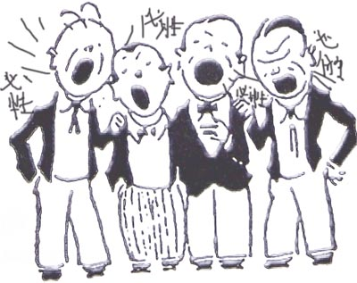

必胜谱的传说
#1 必胜谱的传说 作者：有志青年 发表时间：2007-9-22 12:49:20
#2 下篇：癫狂的世界 作者：有志青年 发表时间：2007-9-22 12:51:19
下篇：癫狂的世界
路人甲：必胜谱明天看，必胜谱天天看
路人丙：谱好，胃口就好，身体倍棒，吃嘛嘛香，下嘛嘛胜
路人乙MM（严肃地）：下棋我选择必胜谱
路人丁（活泼滴）：今年过节不收礼啊，不收礼啊，不收礼 。收礼只收 必胜谱 必~~`胜~~~谱（蹦蹦跳扮可爱状）
贩子：哇，你们总算大彻大悟了
众人继续
路人乙MM：一个月总有那么几天怕输掉。现在好了，自从我用了必胜谱，左防右防，怎么防都不怕了
路人甲：我只用必胜谱。因为————我相信群众
路人丙：想下棋怎么办？看必胜谱啊
路人甲：用必胜谱，走必胜路
路人丙：必胜谱 我选择 我喜欢
路人丙：下什么就是什么————必胜谱
路人丙：我的必胜谱 我做主
路人乙MM：必胜谱，“月”用“月”开心
路人丁 ：棋谱，棋谱，必胜起来一片情。。。
路人丙：必胜谱，今天你看了没有？
路人乙MM：必胜谱。。。谁用谁知道。。。。。还是必胜了解女人
路人甲： 棋到山前必有谱，有谱必用必胜谱。为人不识必胜谱，下一辈子也糊涂
路人丁：必胜谱，有多少就赢多少
路人甲：有了必胜谱，腰不酸拉，背不痛拉，腿也不抽筋拉，一抬手，NND，10个现实高手应声倒地拉。
路人乙MM ：用了必胜谱，嘿，还真对得起咱这张脸
路人甲：快使用必胜谱啊，哼哼哈黑
路人丙：痒死啦~~~~啊~~~~~我给你挠挠？不用了，必胜谱，快速止痒。。。。我靠，咋比我还快呢？？？
路人丁：用必胜，治痔疮，师爹牌必胜
路人乙MM： 用了必胜谱 想赢谁就赢谁
路人甲 ：
买东西送你朋友啊？男的女的？多大了？
男的，40
送必胜谱啊，用了都说好
路人丁：你有老婆没？ 追女孩子就得用————必~~~~胜~~~~谱
路人乙MM：必胜谱。。。。下下更健康
路人丁：简约而不简单，LIB牌必胜谱
路人丙：中国人，都补过必胜谱拉。。。
路人甲：
小朋友，知道怎么下棋才能赢吗？
用 必 胜 谱~~~~~~~
恩，没错。那我们的目标是？
永 不 脱 谱~~~~~~~~
路人乙MM：必胜谱，用一次，就知道是我想要的
路人丙：呦，干嘛呢？想葛灵呢。。。别想了，我给你介绍一位新朋友。。。必胜谱（狂喜状）。。。。。还想葛灵吗？葛灵是谁？
路人丁（浑厚男低音，严肃地）：必胜谱————北京奥运官方指定厕纸

路人甲 ：
绿色必胜，科技必胜，人文必胜
路人乙MM （羞答答滴）：
女人都用必胜谱。。。。必胜谱，他赢，我也赢
路人丙 ：
用必胜谱把海水吸干，海对面的小朋友就可以过来玩了。。。
路人丁：
同一个世界，同一张必胜谱；同一张必胜谱，同一个结局
众人兴奋至极，拉起手转起了圆圈圈。转啊转啊，转的昏天暗地，最后纷纷晕倒在地
贩子（低头窃笑，志得意满地）：
以上各人发言已被我成功套谱，收入必胜变化中，文章将刊登于中国连珠网。题目：必胜谱的传说 嘿嘿嘿~~~~
我早说了，必胜谱是毒药，尝了就离不开的
你们偏不听我的，看，被套牢了不是？
有了必胜谱，天下无谱
今天，你必胜了没有？耶
贩子收敛好各人财物，嘴中念念有词，大笑远去
全剧终
PS：特别感谢励精老师、九指、丸子、潇洒、佟卓男等棋友友情参演
#3 Re:必胜谱的传说 作者：逆刃 发表时间：2007-9-23 18:15:54
强，写得这么强的东西出！特别是那图！
#4 Re:必胜谱的传说 作者：lfc 发表时间：2007-9-25 17:18:41
强!什么是强,今天算是理解它的含义!
#5 Re:下篇：癫狂的世界 作者：张冬 发表时间：2009-9-8 12:13:06
不是一般的强!顶~